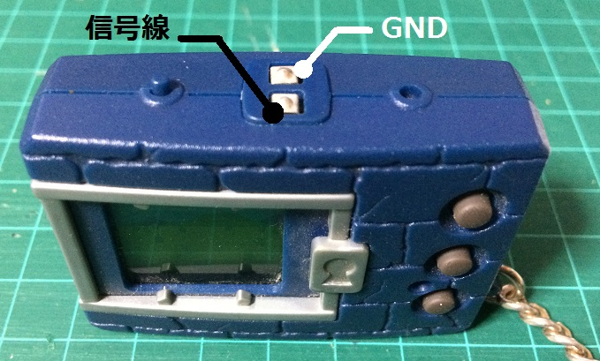
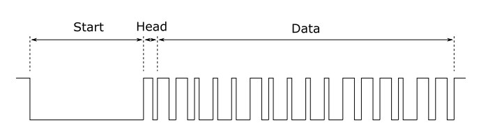
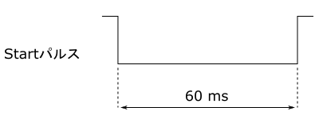
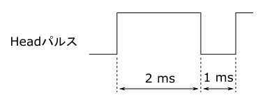
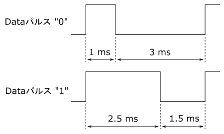

D-Link(通信規格)の解析
記事作成 : 2016/4/27(水) 最終更新 : 2016/11/25(金)
はじめに
D-Link とは携帯液晶ゲーム「デジタルモンスター」の通信に使用されている通信規格のことです。 このD-Linkという名称はD-3が発売されたころに使われていたそうですが(wiki参照)、一般的に普及していたかはかなり怪しいところです。 せっかく名付けられたのですから当サイトではD-Linkという名称を使うことにします。
D-Linkは初代からペンデュラムプログレスまで使用されましたが、ペンデュラム以降はバトル形式の変化に伴ってデータ形式も変更されています。 ここではD-Linkが使用されている全ての液晶ゲーム(デジヴァイスも含む)で共通する部分のみを解説したいと思います。
ちなみにここに書いている内容は私が解析した結果から推測したものであり、正しいという保障はありませんのであしからず。
コネクタ
コネクタはご存知の通り2端子です。 下の写真のように、正面から見て奥の端子がGNDとなっており、手前の端子でデータの送受信を行います。
信号線は平常時はHi-Z出力でプルアップされた状態となっています。 データ送信時はHighとLowが出力されます(Hi-Zではないことに注意してください)。 なお、Highレベルの電圧は電源(LR44×2)の電圧なので3Vです。
フレーム
D-Linkはフレーム単位で通信を行います。 フレームのデータサイズは16bitで、このフレームを交互に送信するかたちで通信が行われます。 データ内容および1度の通信で送信されるフレーム数は液晶ゲームの種類によって異なります。 例えば、初代デジタルモンスターで送受信されるフレームは合計4つですが、ペンデュラムでは6つとなっています。
フレームのフォーマットは下の図のように、3種類のパルスから構成されます。
【Startパルス】
フレームの最初は60msのLowが送信されます。 このパルスの長さは何秒まででも良いらしく、ずっとLowを送信し続けると受信側はいつまでもフレームを待ち続けるようです。
【Headパルス】
Startパルスの直後にはデータとは関係の無いパルスが1つ送信されます。 波形は下の図のように、Highの時間が2ms、Lowの時間が1msで固定です。
【Dataパルス】
D-LinkではパルスのHighの長さで"0"、"1"の情報を送信します。 Highの時間が長ければ"1"、短かければ"0"となり、HighとLowの時間を合計したパルスの長さは必ず4msとなります。 ちょうどHeadパルスのHighの時間より長いか短いかで区別することができます。 フレームのデータサイズは16bitなので、このデータパルスが16個連続して送信されます。 また、データはLSB(最下位ビット)から順に送信されます。
プログラム
下にArduinoにおけるプログラムの例を載せておきます。 ただし、ArduinoのIOは5V出力なので、3Vで駆動している液晶ゲームに直接つなげることはできません。 送信では、単純にdigitalWrite関数と遅延関数を用いて信号を生成します。
Arduinoでの送信プログラム
void dlinkSend(word frame)
{
// Start
digitalWrite(outPin, LOW);
delay(60);
// Head
digitalWrite(outPin, HIGH);
delayMicroseconds(2000);
digitalWrite(outPin, LOW);
delayMicroseconds(1000);
// Data
for (int i = 0; i < 16; i++) {
if (frame & (1 << i)) {
digitalWrite(outPin, HIGH);
delayMicroseconds(2500);
digitalWrite(outPin, LOW);
delayMicroseconds(1500);
} else {
digitalWrite(outPin, HIGH);
delayMicroseconds(1000);
digitalWrite(outPin, LOW);
delayMicroseconds(3000);
}
}
digitalWrite(outPin, HIGH);
}
受信ではpulseIn関数を使用してHigh時間を計測しています。 まず、HeadパルスのHigh時間を計測し、Dataパルスの読み取り時は、その時間より長いか短いかで"0"、"1"を判別しています。 これにより、受信では時間に関する定数が出てきません。
Arduinoでの受信プログラム
word dlinkRecv()
{
word frame;
unsigned long w, thr;
// Startが来るまで待機
while (digitalRead(inPin) == HIGH);
// Head
thr = pulseIn(inPin, HIGH);
// Data
for (int i = 0; i < 16; i++) {
w = pulseIn(inPin, HIGH);
if (w > thr) {
frame |= (1 << i);
}
}
// Dataの最後のLowが終了するまで待機
while (digitalRead(inPin) == LOW);
return frame;
}
Arduinoで育成ギアと通信するライブラリおよびサンプルをGitHubで公開しています。 下にリンクを載せておきますので、もしよければ使ってください。
[リンク]
https://github.com/botamochi/DLink